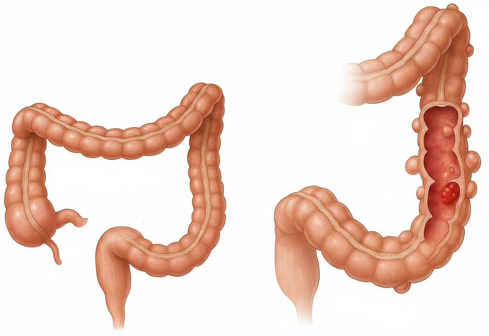

Ce sunt diverticulii și de ce se inflamează?
Pentru a înțelege diverticulita, trebuie mai întâi să facem o călătorie în interiorul colonului și să vedem cum apar aceste structuri unice și de ce, uneori, pot cauza probleme.
Anatomia colonului și formarea "buzunarelor" (diverticuloza)
Colonul, sau intestinul gros, este un tub muscular lung, al cărui perete este, în mod normal, neted și uniform. Rolul său principal este de a absorbi apa din materiile fecale și de a le propulsa spre rect pentru eliminare. Diverticulii sunt mici dilatații saciforme, asemănătoare unor buzunare sau hernii, care se formează atunci când mucoasa interioară a colonului împinge spre exterior prin punctele slabe ale stratului muscular exterior. Aceste puncte de slăbiciune nu sunt întâmplătoare. Ele apar, de obicei, în locurile unde vasele de sânge (numite vasa recta) penetrează peretele muscular pentru a iriga mucoasa colonului, creând mici orificii naturale în structura de rezistență.

O presiune crescută în interiorul colonului, adesea cauzată de efortul de a elimina scaune tari și uscate (constipație), poate forța mucoasa să hernieze prin aceste puncte vulnerabile. Deși diverticulii pot apărea oriunde în tractul digestiv, ei se formează cel mai frecvent în ultima parte a colonului, cunoscută sub numele de colon sigmoid și colon descendent. Această zonă, situată în partea stângă a abdomenului inferior, este cea mai îngustă parte a colonului, unde presiunea este în mod natural cea mai mare în timpul procesului de digestie și eliminare.
Prezența acestor diverticuli, sau diverticuloza, este extrem de comună și prevalența ei crește dramatic cu vârsta. Mai puțin de 5% dintre persoanele sub 40 de ani au diverticuloză, dar procentul urcă la peste 65% în rândul celor de 85 de ani. Adesea, este o descoperire incidentală, fără nicio semnificație clinică, în timpul unei colonoscopii efectuate pentru screeningul cancerului colorectal sau din alte motive.
De la stare latentă la criză acută (diverticulita)
Tranziția de la starea benignă de diverticuloză la criza acută de diverticulită are loc atunci când unul dintre aceste „buzunare” se blochează. Mecanismul este similar cu ceea ce se întâmplă în apendicită. Mici bucăți de materii fecale sau bacterii pot rămâne captive în interiorul unui diverticul. Acest blocaj creează un mediu propice pentru multiplicarea bacteriilor, ducând la iritație, inflamație și, în cele din urmă, la o infecție localizată. Pe măsură ce inflamația progresează, peretele subțire al diverticulului se umflă, iar presiunea din interiorul său crește. Acest proces este responsabil pentru durerea intensă și celelalte simptome „zgomotoase” care definesc un episod de diverticulită acută.
Factorii de risc: cine este predispus?
Dezvoltarea diverticulitei nu este o chestiune de ghinion; este rezultatul unei interacțiuni complexe între factori genetici, stil de viață și condiții medicale. Cunoașterea acestor factori de risc este esențială, deoarece mulți dintre ei pot fi modificați.
Factori legați de stilul de viață (modificabili):
- Dieta: Acesta este, probabil, cel mai important și mai studiat factor de risc. O dietă săracă în fibre și bogată în grăsimi animale și carne roșie este puternic asociată cu un risc crescut. Fibrele ajută la formarea unor scaune moi și voluminoase, care trec ușor prin colon. În absența fibrelor, scaunele devin tari, necesitând un efort mai mare pentru eliminare, ceea ce crește presiunea intraluminală și favorizează formarea diverticulilor.
- Sedentarismul: Lipsa activității fizice regulate încetinește tranzitul intestinal și contribuie la constipație, crescând astfel riscul de diverticulită. Studiile arată că exercițiile fizice viguroase, precum alergatul, par să aibă un efect protector.
- Obezitatea: Greutatea corporală excesivă este un factor de risc independent și bine stabilit, crescând probabilitatea de a dezvolta atât diverticulită, cât și complicațiile acesteia.
- Fumatul: Persoanele care fumează sunt mai predispuse la a dezvolta diverticulită comparativ cu nefumătorii.
Factori medicali și demografici:
- Vârsta: Riscul crește exponențial după vârsta de 40 de ani, devenind o afecțiune predominantă la vârstnici.
- Medicamentele: Utilizarea pe termen lung a anumitor clase de medicamente este asociată cu un risc crescut. Printre acestea se numără antiinflamatoarele nesteroidiene (AINS), precum ibuprofenul și naproxenul, steroizii și medicamentele opioide pentru durere. Acestea pot afecta integritatea mucoasei intestinale sau pot masca simptomele timpurii, ducând la complicații.
- Factori genetici: Există dovezi clare ale unei predispoziții genetice. Riscul este mai mare dacă aveți membri ai familiei care au suferit de diverticulită. Anumite boli ereditare ale țesutului conjunctiv, cum ar fi sindromul Marfan, pot, de asemenea, să crească vulnerabilitatea peretelui colonic.
- Microbiota intestinală: Dezechilibrele dintre bacteriile „bune” și cele „rele” din intestin (disbioza) sunt considerate un factor contributor la procesul inflamator care declanșează diverticulita.
Demontarea unui mit: puteți mânca nuci, semințe și floricele de porumb
O schimbare fundamentală în înțelegerea dietei pentru boala diverticulară merită o atenție specială. Timp de decenii, pacienții cu diverticuloză au fost sfătuiți să evite cu strictețe nucile, semințele de orice fel (inclusiv cele de pe roșii sau castraveți), floricelele de porumb și cojile de fructe. Teoria din spatele acestei recomandări era că aceste particule mici și dure s-ar putea bloca în interiorul diverticulilor, provocând iritație și declanșând un episod de diverticulită.
Această idee, deși pare logică la prima vedere, nu a fost niciodată susținută de dovezi științifice solide. Dimpotrivă, studii ample și ghiduri clinice moderne, emise de organizații de prestigiu precum Institutul Național pentru Sănătate și Excelență în Îngrijire din Marea Britanie (NICE) și Asociația Americană de Gastroenterologie (AGA), afirmă acum în mod categoric că nu este necesar să evitați aceste alimente. Cercetările nu au reușit să demonstreze nicio legătură între consumul acestor alimente și un risc crescut de diverticulită sau complicațiile acesteia.
Această schimbare de paradigmă este extrem de importantă și eliberatoare pentru pacienți. Ea mută accentul de la o listă restrictivă de alimente „interzise” la promovarea unui model alimentar general sănătos, axat pe un aport ridicat de fibre din toate sursele disponibile, inclusiv din cele menționate mai sus, care sunt, de altfel, foarte nutritive. În loc să vă temeți de semințele dintr-o zmeură, concentrați-vă pe includerea unei varietăți cât mai mari de fructe, legume și cereale integrale în dieta zilnică. Această abordare modernă, bazată pe dovezi, nu doar că simplifică managementul dietei, dar încurajează și un stil de viață mai sănătos și mai puțin restrictiv.